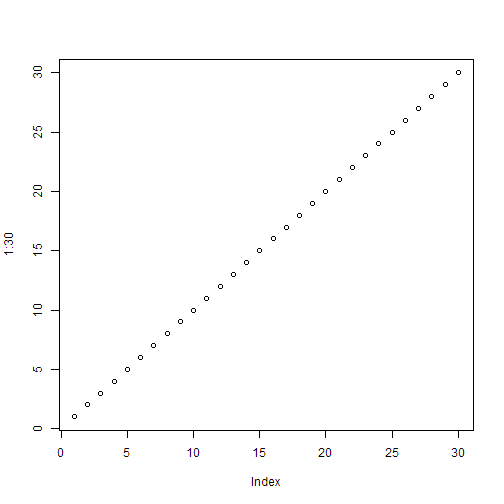
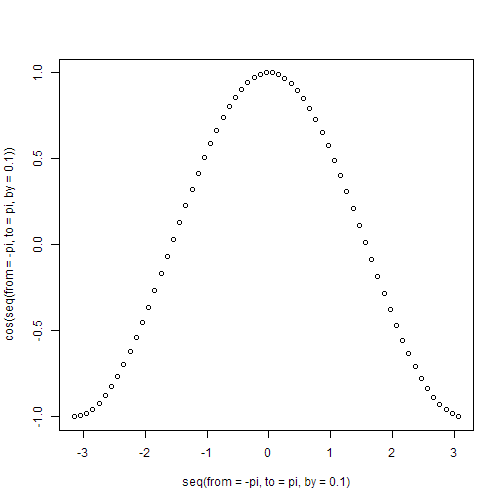
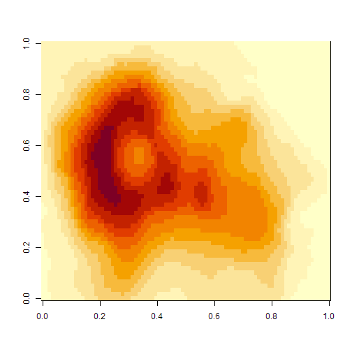

Table of Contents
## Warning: package 'data.table' was built under R version 3.6.1## Warning: package 'mgcv' was built under R version 3.6.1## Loading required package: nlme## Warning: package 'nlme' was built under R version 3.6.1## This is mgcv 1.8-28. For overview type 'help("mgcv-package")'.I just loaded external pkgs.
I just loaded custom pkg.
I can call a custom function hello from a custom pkg postpkg.
## [1] "Hello World!"This is an exemplary text



This is extra text. This is another extra text.
This is one more extra text. This is one more additional extra text.
:smile:
## sysname release version nodename machine
## "Windows" "10 x64" "build 18945" "WLOG-WJ" "x86-64"
## login user effective_user
## "WitJakuczun" "WitJakuczun" "WitJakuczun"## [1] "D:/Workplace/Projects/WLOGSite/trunk/wlogblog/posts/2019-08-09-reproducibility-with-r--tell-me-about-your-workflow-first/deployment/sbox"
## [2] "D:/Workplace/Projects/WLOGSite/trunk/wlogblog/posts/2019-08-09-reproducibility-with-r--tell-me-about-your-workflow-first/deployment/libs"
## [3] "D:/Workplace/Tools/R/R-3.6.0/library"